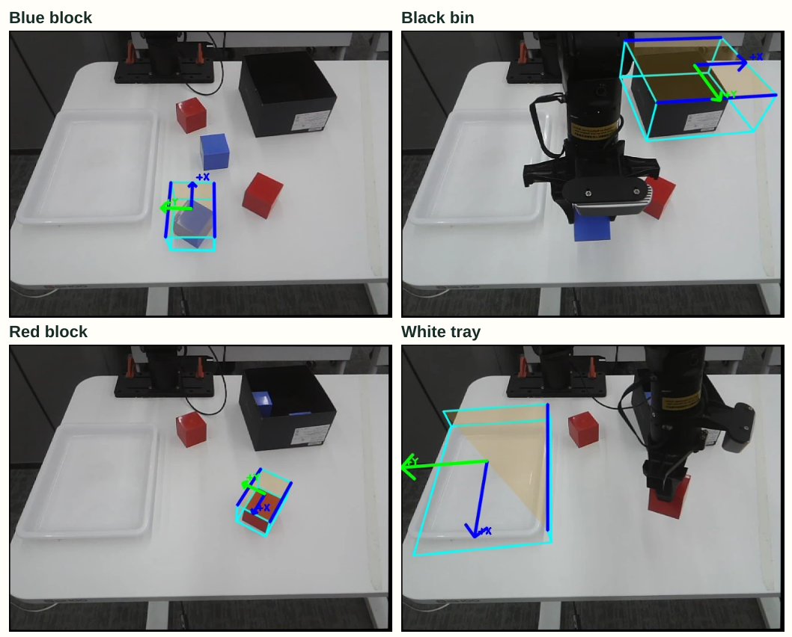
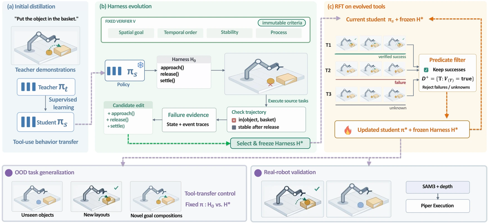
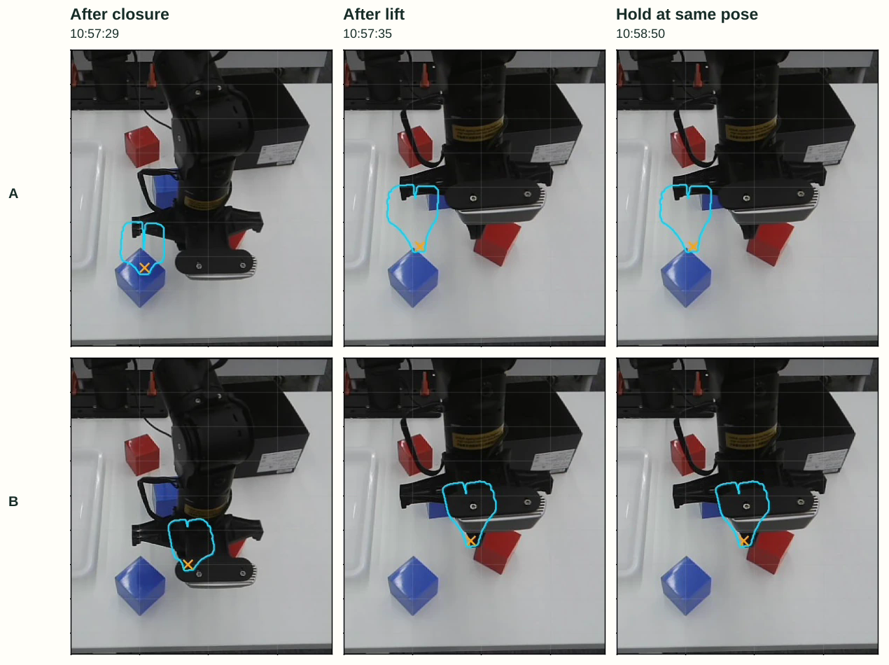
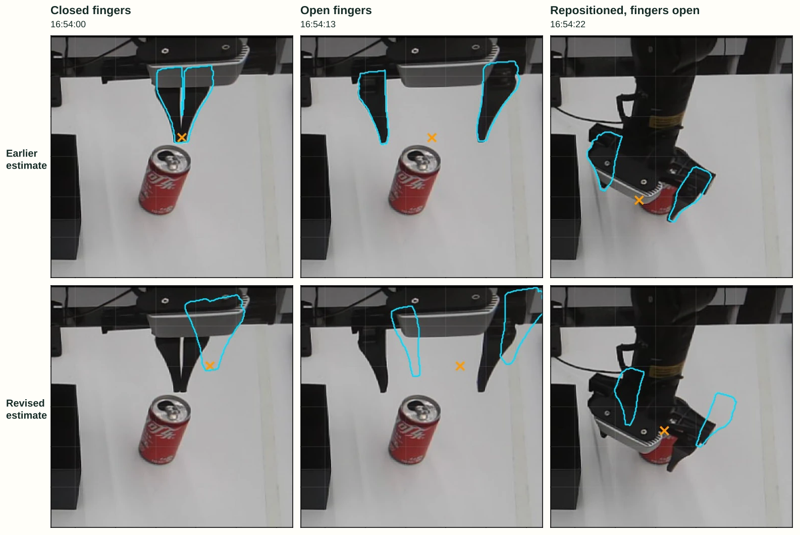

目录
主要发现
我们在真机上比较动作接口，并单独测试取块、放入抽屉再关好抽屉这一留出组合任务。在仿真中，我们用 15 项操作任务评测策略和执行器。
- 相同的工具可以有两种调用方式。在相同的真机摆位上，GPT‑6 Astra 逐步调用语义工具成功 62/80 场（77.5%），CAP（Code as Policy）成功 57/80 场（71.25%），相差 5 场，即 6.25 个百分点。逐步调用由模型读取每次返回并决定下一步；CAP 把条件和重试写入程序，由程序根据工具返回继续执行。
- 学生学会了部分教师的工具调用行为。在 15 项仿真操作任务中，按原生任务判据，Qwen3.5‑4B 的成功数从蒸馏前的 33/450 增至蒸馏后的 150/450。同一执行条件下，GPT‑6 Astra 教师完成 311/450。
- 改进执行器能让固定策略完成更多任务。在相同 450 个初态上，仅替换执行器，独立复核通过数从 130 增至 185；再使用进化执行器采集的数据微调学生，完整系统达到 239。方法与分阶段对照。
引言
抓起一个方块时，语言模型可以逐步指定夹爪的接近位姿、闭合与抬升，也可以用物体名称请求一次抓取。两种接口都能让手指闭合。如果方块仍在桌上，谁能看到这次失手，又由谁决定重试？我们从真机工作台上的抓取、释放与失败恢复出发，比较这两种决策分工。
15 段工作台真机录像用于核对夹爪抬升和松开后物体的位置。为了比较学生从工具轨迹中学到了什么，我们在 15 项仿真任务上分别替换策略和执行器，再用匹配摆位的真机实验检验结果。§3.2 用两段人形机器人仿真回放讨论另一类问题：跨本体放置可以沿用哪些完成条件，双机交接需要增加哪些确认。
我们把三个问题分开比较：固定 GPT‑6 Astra 和工作台摆位，观察改变动作接口如何影响任务完成与决策开销；固定仿真工具，比较蒸馏前后的同一个学生；最后冻结学生并更换执行器，检查同一条工具调用能否得到更可靠的动作。
1. 研究设计
1.1 任务与评测场景
1.1.1 仿真主评测：15 项任务
我们在 Piper 仿真中为每项任务设置 30 个新场景，每种策略均评测 450 场。下表按操作要求列出全部任务，并区分其训练来源。七项来源任务提供初始蒸馏轨迹，也用于执行器搜索和后续自训练采集；对这七项评测的是新摆位。另八项未进入上述训练或搜索，检验策略能否把已学操作用于不同物体、空间关系和任务组合。
| 操作要求 | 蒸馏来源任务（7） | 来源集外任务（8） |
|---|---|---|
| 抓取与放置 | 罐子入箱、托盘取方块 | 抓起胡萝卜、柠檬入箱 |
| 接触推动 | 推篮、关闭抽屉 | 推锅 |
| 空间关系与摆放 | 苹果与果汁排序 | 番茄放到土豆旁、方块反向堆叠、苹果与果汁反向排序 |
| 搜索、分拣与组合 | 杯子游戏、红色物体入篮 | 箱子与托盘分拣、摆桌 |
原生成功率（N-SR）使用任务环境给出的终态标志。复核成功率（V-SR）还要求目标空间关系、工作区边界、事件次序和动作后保持均满足任务要求。保持窗口在 20 Hz 下取 31 个状态样本，首尾间隔 1.50 秒。例如，摆放任务要求物体释放后仍受目标容器支撑。执行失败和证据不足的场次均保留在分母中。
1.1.2 分布偏移与真机协议
仿真另设四个互不重叠的测试集：未见摆位、未见物体、未见目标组合和长序列，每组 120 场，按原生判据分别报告。我们的真机配对评测包括罐子入箱、杯子游戏、苹果与果汁排序、方块反向堆叠。每任务复位 10 个摆位，五种策略各执行 40 场，共 200 次尝试。四项分别检验释放后容纳、遮挡下的目标搜索、多物体相对次序和叠放稳定性。
本文的 GPT 动作接口对照另选四项工作台任务：罐子入箱、关闭抽屉、托盘取方块和红色物体入篮。§2.3 的托盘取块后关抽屉是该对照的留出组合。
1.2 模型、动作接口与评测条件
- 观察与指令
- GPT
- 末端目标或动作片段
- 本地控制器逆运动学与插值
- 机器人
- 机器人 → 新观测 → 观察与指令
- 观察与任务
- GPT 编程智能体
- 程序与工具
- 机器人
- 检查执行轨迹
- 检查执行轨迹 → 诊断与修复 → GPT 编程智能体
- 检查执行轨迹 → 验证并保存 → 已验证技能
- 已验证技能 → 检索并复用 → GPT 编程智能体
- 观察与任务
- GPT 规划器
- 动作策略与解析原语
- 机器人
- 验证任务结果
- 验证任务结果 → 重新规划、调整起点或重试 → GPT 规划器
- 动作策略提出候选动作
- GPT 审查
- 接受、修改或替换
- 执行动作
四种架构按 GPT 介入的位置划分。前三种均可复用示范、任务记忆和经过验证的技能；动作审查也可以叠加在已有策略上。下文的四项接口条件用于具体实验，与这四种架构并非一一对应。
- 末端位姿
- 给出基座系末端位置、姿态和夹爪命令。逆运动学在本地求解，每段结束后读新图像和实测位姿。
- 细粒度工具
- 模型从当前图像选择运动原语，例如向右微移、下降一步或闭合夹爪。控制器执行该步，模型读取新观测再选下一步。
- 语义工具
- 沿用 Guava 的九个模型可见工具。抓取按物体名调用，局部执行器选抓姿、接近、下降并闭合。抬升由下一条运动指令发起。
- CAP
- 开放相同的语义工具，让模型一次写出条件与重试。程序依据实时返回决定分支；程序结束或出错，记录再送回模型。
成功按任务终态判定，并额外记录误抓、碰撞、保护停止和超时。各接口共享速度、工作空间、控制步数上限与墙钟时限；CAP 程序的循环和语义工具内部的动作都占预算。指令与相机证据相同，提示只更换必要的动作格式。接口对照固定使用 GPT‑6 Astra 和同一组推理参数。
1.2.1 配对摆位与执行预算
四项工作台任务各设 20 个摆位。GPT‑6 Astra 用四种接口依次执行同一组 80 个初态，每种接口执行 80 场，四种接口共执行 320 场。俯视参考图、容器朝向和夹爪起点用于复位；按摆位轮换执行顺序，以控制次序效应。
1.2.2 坐标系与拒绝执行的请求
末端位姿接口需要规定坐标系、姿态约定和法兰至指尖的变换。工具接口在执行器内进行这部分换算。两者均记录模型请求、控制器接受的目标以及实测位姿。逆运动学拒绝计入预算。若最终画面里夹爪未移动，这三项记录可以区分未下发命令、目标不可达和运动未到位。
2. 结果
2.1 末端控制与工具调用
2.1.1 总体表现与比较口径
| 接口 | 罐子入箱 | 关闭抽屉 | 托盘取方块 | 红物入篮 | 合计 |
|---|---|---|---|---|---|
| 末端位姿 | 13 | 14 | 11 | 5 | 43 |
| 细粒度工具 | 11 | 12 | 10 | 6 | 39 |
| 语义工具 | 17 | 17 | 16 | 12 | 62 |
| CAP | 17 | 15 | 16 | 9 | 57 |
GPT‑6 Astra 直接指定末端位姿时完成 43/80 场，调用语义工具时完成 62/80 场，相差 23.75 个百分点。红物入篮的差距最大，分别为 5/20 和 12/20。要定位差距来自目标误选、邻物干扰还是释放落点，需要逐段回放。
2.1.2 逐任务差异与托盘净空
逐步调用语义工具比 CAP 多成功的 5 场集中在两项任务：红物入篮为 12/20 对 9/20，关闭抽屉为 17/20 对 15/20。罐子入箱均为 17/20，托盘取方块均为 16/20。
直接给末端位姿与逐次调用语义工具相比，关闭抽屉相差 3 场，红物入篮相差 7 场。总计中的优势在不同任务上并不均匀。
托盘取块需要抓姿可达，指尖还要避开盘沿。直接位姿完成 11/20 场，语义工具完成 16/20 场。下面的简单和拥挤桌面录像可用来检查第一次接近与接触；仅凭终帧无法判断差距来自定位还是运动修正。
盘里只有一个蓝块。把画面停在抬升和落放两处，能分别看到方块离开盘沿和在盘外着桌。
仍是从盘里取蓝块，但盘外多了积木和小物件。与简单桌面的录像对照，看夹爪选择了哪一块空桌面来放置。
2.1.3 抓空之后，谁决定重试？
两种接口共用定位、抓取和释放工具。以托盘取块为例，夹爪闭合后方块仍在盘底：逐步调用需要模型读取反馈，再请求定位；CAP 可以在同一次程序执行中按反馈重新定位。表 1 列出每场模型决策次数的中位数。
2.2 工具粒度与执行开销
2.2.1 同一次抓取，在哪一步交还控制？
下面的伪代码展示两种接口的内部实现。Semantic 接收物体名称，把抓取、试抬和验证封装在一次调用里。Fine 一栏展开运动原语底层的设备接口，返回实测位置、夹爪开度或驱动状态。
def pick(object_name: str) -> str:
# 1. Perception: find the named object in the RGB-D frame.
rgbd = camera.capture()
mask = grounding_sam(rgbd.rgb, object_name)
if not reliable_mask(mask):
return "not_found"
# 2. Grasp pose: fit the grasp to the object's 3D points.
cloud = unproject(rgbd, mask)
grasp = fit_grasp_pca(cloud)
# 3. Planning: approach the grasp via a pregrasp pose.
path = planner.plan_via(
robot.pose(), pregrasp(grasp), grasp.pose)
if path is None:
return "unreachable"
# 4. Execution: follow the path, close and test-lift.
if not execute_checked(path):
return "motion_failed"
robot.close_gripper(grasp.width)
if not test_lift_checked():
return "lift_failed"
# 5. Verification: check whether the object lifted with the gripper.
seen = track_target(camera.capture(), mask)
if seen.held_clear_of_surface:
return "grasped"
if seen.on_surface and seen.gripper_empty:
return "empty_grasp"
return "unconfirmed"def set_joint_positions(q_rad, duration_s):
# Move to joint angles in radians over the requested duration.
driver.follow_joint_path(
interpolate(robot.q(), q_rad, duration_s))
return driver.joint_positions(), driver.status()
def set_cartesian_pose(pose_mm_deg, frame):
# Express the target (mm, degrees) in the driver's frame.
target = to_driver_pose(pose_mm_deg, frame)
driver.command_pose(target)
return driver.measured_pose(), driver.ik_status()
def set_gripper(width_mm, force_n):
# Set opening (mm) and force (N), then read the actual opening.
driver.command_gripper(width_mm, force_n)
return driver.opening_mm(), driver.status()
def set_impedance(kp, kd):
# Set stiffness and damping gains and read back driver status.
driver.set_gains(kp, kd)
return driver.status()2.2.2 从工具返回值能判断什么？
上例中的 pick 将验证放在工具内部。§1.2 实验所用的 grasp 则在夹爪闭合后返回，并将闭合受阻的 blocked 也映射为 grasped。要区分夹住方块和碰到盘沿，需要再抬升并观察方块是否离开盘底。 [1]
在 pick 的示例中，empty_grasp 表示试抬后看到目标仍在支撑面上、夹爪内为空。模型可以据此重新定位。目标被遮挡时返回 unconfirmed，此时更有用的下一步是换个视角。硬件接口返回的开度或位姿本身回答不了这两个问题。
固定 GPT‑6 Astra，细粒度工具与语义工具分别完成 39/80 和 62/80。两个机制可能解释这一差异。其一，模型少做了几次本可以由控制器稳定完成的坐标传递；其二，一个“抓取”内部可能已经包含了更好的定位或重试。只比较工具名字的数量，区分不了它们。
| 选择方式 | 成功 | 每场模型决策中位数 |
|---|---|---|
| 细粒度工具 | 39/80 | 15 |
| 语义工具 | 62/80 | 7 |
| CAP | 57/80 | 3 |
CAP 可以预先写好“确认持握后抬升”的条件。若读到抓空，程序可以立即重试；若持握信号有误，程序也会据此执行错误动作。因此一次模型决策可能对应多次实际闭合。
控制这一混杂因素的方法是把同一条粗工具的调用记录展开成细原语，逐项核对定位器、夹持阈值、接近路径和允许重试次数。再比较由 GPT 重新组织这些原语的版本。如果收益只在启用工具内重定位后出现，就应把收益记给执行器。
2.2.3 动作拆多细，和动作怎么命名
RT-H 从示范轨迹的本体感受信号生成运动短语。策略先预测短语，再结合图像、任务和短语预测机器人动作。把每种短语替换成唯一整数后，分层依然存在，但“向前”和“向前并向左”失去了共享的词。在八项任务上，这个版本的平均表现下降。也有值得保留的例外：直接聚类动作的版本在开、关开心果罐上表现更好，作者推测聚类保留了语言标注阈值滤掉的微小运动。 [5]
Show-Harness 固定执行器，只改变六个平移动作的名字，以及是否告诉模型每个动作会往哪个方向移动。把名称换成任意符号、但保留方向说明，效果接近默认配置；符号和方向的对应也要模型靠试探来猜时，把方块或香蕉放到盘中的 20 场只成功 1 场。这个消融改变了模型对动作含义的了解，每步覆盖的运动相同。 [6]
在我们的 80 个配对摆位上，语义工具比细粒度工具多成功 23 场。要拆分这 23 场背后的原因，可以在两种粒度下分别用原名和匿名编号各跑一组，给两组相同的参数、单位、返回值和动作说明，并固定执行器、重试预算和摆位。这样，同一粒度内能比较命名，两种粒度间能比较交还控制的位置。
2.2.4 失败归因与目标绑定
红色物体入篮包含三次独立决策：模型指定目标，定位器把描述绑定到当前实例，执行器选择接近方向。目标描述正确时，掩码仍可能包含相邻物体；实例正确时，下降仍可能碰撞。图 1 将每场失败归于第一个能由观测确认的偏差，其余事件保留作进一步诊断。

GPT‑6 Astra 使用末端位姿和语义工具时分别有 37 与 18 场失败。定位类别的绝对数量下降，既可能来自更可靠的目标绑定，也可能来自执行器在更接近动作的时刻获取图像。验证这一区别需要固定观测时刻并重放同一次目标绑定。
2.2.5 持握与释放的观察依据
夹爪到位、物体离桌、释放后稳定属于不同阶段。下方录像分别展示单个红色目标与多个相近颜色的物体。第二次接近时，邻物可能遮挡原目标；复核时需要保留第一次接触至下一次定位的连续画面。这两条录像用于分析观测条件，缺少逐场的接口标识。
这一场桌面上只有一个红色目标。夹爪从右侧搬到左侧容器，撤手后可以直接看清目标的位置。
一个红块和一枚草莓形物体都符合颜色描述，旁边还有黄、蓝色物体。先跟随红块到篮沿，再看夹爪返回桌面时接近了谁。
2.2.6 条件执行与跨轮状态
逐次调用把抓空交回模型决策。CAP 程序可以在本地读取返回并触发重试，但其可靠性取决于返回值是否有足够的物理含义。若要比较代码生成的贡献，两种条件应共享感知器和持握信号，并记录工具内部实际发出的每一次闭合。
三个倒扣的杯子遮住桌面。把视频停在揭杯前，再看杯子抬起时新露出的区域：哪些位置已经查过？一旦杯子挪动，画面里的“左边那个”就不再是可靠的身份标记。最后可以看到黄色小块出现在红盘中。
从侧面能区分两次状态变化：手指已经靠住杯壁时，杯下仍看不见；杯沿离桌后，黄色目标才露出。此刻可以更新搜索记录，接下来的抓取仍是另一个动作。
杯子游戏进一步要求维持实例身份。按横向位置排序可以区分一帧内的三个杯子；搬走其中一个后，再次选择最左侧实例可能指向不同物体。用于恢复的执行状态应随观测更新，并保留已检查的对象及位置。
另外两种架构把这个交接点放在不同位置。Code as Policies 让模型生成读取感知结果、调用控制原语的程序；一次抓空后，程序可以按已写好的条件分支。Harness VLA 则由规划器在解析原语与冻结的 VLA 之间选择，执行后读新的 RGB-D 观测，再决定是否调整起点重试。对 Piper 来说，这解释了为什么我们把模型决策次数、实际抓取次数分开计数。 [2] [3]
2.2.7 决策等待与整场耗时
末端位姿按段下发时，连续两段运动之间可能出现等待。分解这段间隔需要对齐请求发出、命令返回、机械臂起动和工具返回四个时刻。
| 接口 | 累计模型等待中位数 | 整场耗时中位数 |
|---|---|---|
| 末端位姿 | 47 s | 76 s |
| 语义工具 | 23 s | 54 s |
| CAP | 15 s | 48 s |
这里的模型等待按每场累计，再对场次取中位数；整场时间从任务发出到停止。两个中位数相减无法还原机械臂的运动时间。若请求与运动并行，还要把时间区间对齐，区分推理花了多久、机械臂实际空等了多久。
推理与运动的耗时需要按时间区间对齐。一次工具调用可包含本地感知、运动跟踪和等待稳定。若模型在机械臂抬升时准备下一条命令，累计模型等待会增加，但机器人未必空闲。若抬升期间物体滑脱，已经生成的转运命令则需要重新核对。
推篮录像显示了从接触篮沿到篮体发生位移的过程。评估等待来源还需要同一场次的请求时间戳。耗尽预算、超时或提前退出都影响整场耗时的分布，因此成功场次的完成时间与全部尝试的墙钟时间应分开报告。
观察红篮边缘相对桌边的位置，再看机械臂撤开后篮子是否留在新的位置。这个任务可以直接从桌面参照物读出平移。
2.2.8 小结
工具合并后，模型决策次数与机械臂真正尝试的次数可能不同。应分别计两者，再用请求和执行时间戳区分推理等待与物理运动。
2.3 随机摆位与未见任务组合
2.3.1 简单与随机摆位
两段叠放录像都能在外部视角看到夹爪释放。分别停在首次落放、再停在手指离开后，检查上块是否仍由下块支撑。两段素材没有配对的模型运行日志，无法单独估算随机化造成的成功率变化。
红、绿方块从桌面两处出发。绿色上块要在撤爪后仍由红色下块支撑。与随机摆位片段对照时，可以把两段都停在首次落放处。
绿色方块在夹爪里时，单看它的位置很容易误判叠放已经完成。用侧面视角看松爪和撤手：手指与方块之间出现间隙之后，上块是否还留在下块上？
2.3.2 组合任务的阶段判据
腾盘任务要先移走橙杯，目标空间才对红块开放；红蓝分拣则需要在每次释放后更新桌面上剩余的同色物体。两段真机录像分别展示动作前提和跨轮实例记忆。后文的取块关抽屉是另行设计的留出试验。
蓝盘一开始被橙杯占住。先核对杯是否真的离开蓝盘，再看红块能否在同一个盘内落下。前一段动作改变了后一段动作的可行条件。
四块积木分到白盘和黑盒。每放好一块，再看桌面上还剩哪些同色方块。可以从第一次蓝块搬运跳到后半段的红块，再停在终局逐个核对两个容器。一次抓对颜色，只解决了这段任务的一部分。


侧视补充了分拣顶视录像里最难判断的高度关系。蓝块先出现在盒沿前方，随后被抬到盒沿上方。盒壁遮住落点，单凭撤手后的侧视画面不能判断盒底位置。
2.3.3 复杂桌面上的相对次序
排序还要求记住已经放好的物体。香蕉搬开后，夹爪换抓绿色物体。除了检查第二件物体是否抬起，还要在它落下后重新读取两者的左右关系。录像给出了这一检验所需的起点和终点。
机械臂先移动黄色香蕉，再抓起绿色长条物体。看两件物体分别落在哪里，最后在手撤开后核对左右关系。积木和玩偶仍留在场内；单次抓取成功不足以判定排序完成。
2.3.4 留出指令的接口对照
我们为补测留出一条新的任务指令：“把托盘内的方块放进已打开的抽屉，然后关好抽屉。”训练或调接口时分别见过取方块和关抽屉，但本对照把这条组合指令及其摆位留到最后。这里 OOD 指相对于本次开发任务的组合变化；模型预训练中是否见过类似指令未知。
两套冻结接口都可以抓、移、释放、推；不给语义工具新增“方块入抽屉”这样的整任务函数。固定 GPT‑6 Astra，两套接口在同一组 20 个新摆位上各执行 20 场。这个留出对照的 40 场与主对照的 320 场分开统计。物体完整留在抽屉里、夹爪撤出、抽屉关闭并保持，才记一次完整成功。若方块进去了但抽屉没关好，只记阶段进展。
| 接口 | 四项主任务 | 留出组合 |
|---|---|---|
| 细粒度工具 | 39/80 | 0/20 |
| 语义工具 | 62/80 | 10/20 |
要定位表 3 中的差距，先看方块第一次离开托盘，再看释放后哪一轮开始处理抽屉。细粒度代理可能抓得起来，却在抓取、释放和切换到推动之间反复重建局部状态，最后耗尽动作预算。语义代理也可能拿到正确的持握返回，却把方块放在会卡住抽屉的边缘。这是两种可用轨迹验证的解释，尚无真机计数支持因果归因。
2.3.5 任务长度对照
从托盘取块再关抽屉，比单独关抽屉多了几次交接。即使每一步的可靠性都一样，整场成功率也可能随步骤增多而下降。要检验新的组合本身是否更难，我们还需要一条开发时见过、底层动作数相近的组合指令。在相同机位、动作预算和重试规则下复测，语义工具内部的每次重抓也要计入。
阶段分析对两种接口均采用 20 个摆位的固定分母，记录三个事件：方块离开托盘、方块释放后仍在抽屉内、机械臂退出且抽屉保持关闭。两组若主要在第二项分开，先回放搬运和释放；若前两项接近而只有第三项分开，再检查推动和预算。现有终态计数不能推断各阶段的损失。
2.3.6 小结
同样的整场失败，可能发生在取块、释放或关闭三个不同阶段。单看整场成功数无法定位失败发生在哪一步。
2.4 工具调用的仿真蒸馏
2.4.1 训练数据与教师监督
蒸馏以教师的观测、工具调用与返回序列为监督数据。我们在 Piper 仿真中保存了 667 条基础轨迹和 374 条恢复分支，共 1,041 条。教师为 GPT‑6 Astra，学生为 Qwen3.5‑4B。一次训练加载检查发现，原文件虽然保存了工具调用，加载器却会漏掉相应监督内容。这也是我们要把模型请求与工具实际执行逐项核对的原因。
| 轨迹类型 | 条数 |
|---|---|
| 基础轨迹 | 667 |
| 恢复分支 | 374 |
| 合计 | 1041 |
训练导出保留了原审核标签，含 27 条此前被拒绝的记录。恢复分支与父轨迹共享前缀，因此记录数高于独立初态数。
蒸馏监督保持对话的执行顺序：图像和工具返回提供上下文，教师发出的调用及参数构成监督目标。恢复分支中的失败反馈是后续纠正动作的条件；共享父轨迹前缀的分支在数据量统计中需要保留来源关联。
2.5 TERM：执行器进化与策略学习
即使学生调用了正确的工具，抓取高度或释放时机仍可能使任务失败。我们在《Learning to Act, Evolving to Execute》中提出 TERM，将策略与执行器分开：策略产生工具名与参数，执行器（harness）把请求展开为运动、观测和返回事件。训练交替固定其中一侧，使同一组场景能够分别检验执行代码和策略权重的贡献。
2.5.1 教师、基线与蒸馏学生
在相同的 450 个场景上使用原始执行器 H₀，Qwen3.5-4B 蒸馏前后按原生判据完成的场数从 33 增至 150，成功率提高 26 个百分点。GPT‑6 Astra 完成 311 场，蒸馏后的学生与教师仍相差 161 场。表 5 还给出了独立复核结果：Base 通过 29 场，SFT 通过 130 场。教师仅报告了原生成功数。


2.5.2 固定学生，搜索执行器
从蒸馏学生与原始执行器 H₀ 出发，一个独立的 Qwen3.5-4B 生成器读取未满足的判据、关联调用及带时标的观测，修改受限的控制程序。例如，终态保持失败可以追溯到释放动作。候选沿用同一工具签名、可见信息、动作预算和验证器。搜索进行 6 轮，每轮 4 个提案，每个提案最多用 12 个开发场景；改动在配对初态上严格优于当前版本才被保留，再经独立选择集冻结为 H★。
杯子游戏记录了一个可逐步核查的改动。第二轮候选在抓取前加入短暂停稳，执行日志记录了两次各五个仿真步的等待，随后发生抓取与抬升，动作结束后的 31 次原生保持检查全部通过。第三轮候选在相同摆位失败。因此搜索必须在一组配对场景上保留新增成功和新增失败；单段成功回放只能说明改动在该次执行中生效。
2.5.3 固定执行器，检验权重保留的收益
同一蒸馏学生分别用 H₀ 和 H★ 各采集 1,200 次，得到 400 与 520 条符合训练要求的轨迹。为控制训练量，两侧各选 160 条，匹配任务分布和训练 token 预算，进行拒绝采样微调（RFT）。监督目标始终是学生实际发出的调用。先让两组学生都回到 H₀ 测试，再给同一名 H★ 数据学生换回 H★，即可区分权重保留的变化与部署时执行器的贡献。
| 条件 | 策略 | 测试执行器 | N-SR | V-SR |
|---|---|---|---|---|
| 教师参照 | GPT-6 Astra | H₀ | 311/450 (69.11%) | 未报告 |
| Base | Qwen3.5-4B · 蒸馏前 | H₀ | 33/450 (7.33%) | 29/450 (6.44%) |
| SFT | Qwen3.5-4B · 蒸馏后 | H₀ | 150/450 (33.33%) | 130/450 (28.89%) |
| Tools | 同一蒸馏学生 | H★ | 204/450 (45.33%) | 185/450 (41.11%) |
| RFT-H0 | H₀ 采集数据微调 | H₀ | 195/450 (43.33%) | 177/450 (39.33%) |
| RFT-Evo | H★ 采集数据微调 | H₀ | 227/450 (50.44%) | 209/450 (46.44%) |
| Full TERM | 同一 H★ 数据学生 | H★ | 257/450 (57.11%) | 239/450 (53.11%) |
固定蒸馏学生，只换执行器使复核成功数从 130 增至 185，净增 55 场。两组等量微调均使用 H₀ 测试时，H★ 数据组比 H₀ 数据组多通过 32 场（209 对 177）；为前者换上 H★ 又增加 30 场。完整系统在七项来源任务的新场景通过 140/210，在八项来源集外任务通过 99/240。分组结果表明，迁移到新任务仍比适应熟悉任务的新摆位更困难。
四组偏移测试中，完整系统的原生成功数依次为摆位 68/120、物体 64/120、组合 61/120、长序列 55/120。真机上，SFT、仅换工具、完整系统分别完成 9/40、13/40、17/40。完整系统在罐子入箱、杯子游戏、排序、反向堆叠上分别完成 5、4、5、3 场。样本量有限，Holm 多重比较校正后的配对检验未能确立真机差异。
2.6 从图像选点到夹指：跨姿态检查外参
在蓝块上方闭爪时，固定顶视相机的两组外参给出了不同的指尖位置。工作台先通过腕相机标定辅助估计顶视相机相对基座的固定变换。图 3 每列复用同一张 RGB 图和同一组关节反馈，只替换外参。青线是机器人模型的夹指轮廓，橙叉是预测的指尖中心。A 的橙叉靠近蓝块，看起来像是抓到了目标；对照黑色实体夹指，B 与手指更贴合。抬升后再停留 75 秒，A 的偏差仍可见。


罐子场景提示了单帧选外参的局限。图 4 起始闭爪帧，旧估计与新估计的端部偏差分别约为 0.9 和 45.7 像素。这个比较只适用于该帧。刚性顶视相机相对固定基座的外参应是常量；随臂姿变化的是投影残差。排查时应同步 RGB 与关节时间戳，核对指尖几何，并用未参与拟合的姿态比较残差。仅凭这两组图还无法把误差单独归因于时序、运动学或外参。


安装在活动颈部的相机需要另一种处理。我们在 EHR21G 的标定工作台上将棋盘固定，按曝光时刻插值关节反馈，拟合从头部彩色相机到颈部连杆的固定变换。部署时再用当前腰、颈姿态的正运动学把 RGB-D 选点转换到基座系。9 个姿态拟合，另 3 个姿态检验：棋盘角点三维一致性误差 P95 为 4.74 mm，最大角度偏差为 0.65°。这给出了跨姿态定位的复核依据，实际抓取精度还需到夹指处量测。 标定工作台 · 公开只读报告 · 打开标定工作台（本机运行或转发后可用）
3. 讨论与展望
3.1 主要结论
在 Piper 真机上，末端位姿让模型直接决定下一段几何目标，语义抓取工具则在本地完成接近、下降和闭合，再返回夹爪状态。抬升后物体是否离开支撑面仍需单独检查。代价是错误可能隐藏在一次成功返回里。录像能核对物体是否随手移动；要定位最先偏离的那一步，仍要把画面与工具内部记录对齐。
3.2 跨本体迁移与多具身 Agent 协同
把同一句“将方块放进盒里”交给 Piper 和天行者 2 号，哪些东西可以共用？最容易对齐的是完成条件：松手后，方块留在盒内。但 Piper 夹爪的闭合量、接近方向和末端位姿无法原样搬到人形手上。我们想测试的是，同一个 GPT 保留物体、目标容器和完成条件，只替换各本体的抓放工具，能否在两端都完成任务。
看黄块与手的相对运动。第 8 秒黄块随手抬起，第 11 秒手已移开，黄块留在盒内。两帧分别回答了是否抓住、是否放稳。
双机操作还需要确定动作交接的时机。分拣录像记录了两种执行关系。开头两台机器人各自往篮里放块，可以并行。随后蓝块在 A 手边，蓝篮在 B 一侧。A 把蓝块放到桌面中转区，B 再来取；两段动作通过同一块物体连起来。若分别由两个具身 Agent 决策，我们会让 A 报告物体编号和中转位置，B 从自己的视角确认蓝块已放下、A 的手已退出，再接管。若物体滑走，B 可以请求重新定位。
跟踪蓝块 item3。回放第 9 秒，A 的左手开始把它送向中转区；第 15 秒，B 的右手到中转区接取。第 30 秒的俯视图里，红篮和蓝篮各有两个同色块。时间按钮使用播放器时钟。
这两段录像记录了仿真动作。它们没有对应的跨本体策略对照或两个 GPT Agent 的决策日志。下一步可以复用同一批摆位：跨本体测试分别记录抓起率和释放后入盒率；双机测试对比按固定顺序接力与接收方确认后再接力，记录交接成功率、错取次数和总用时。这样才能判断，多一次确认值不值得等。
3.3 失败模式与诊断
3.3.1 载荷变化与抬升后的滑脱
在苹果与果汁排序仿真中，两个摆位使用相同的指尖抓法，唯一改变的参数是果汁容器的仿真质量。每场均执行九个工具动作。69 g 和 138 g 两档均为 2/2 成功；207 g 两场均失败。六次运行都没有报告运动错误。

重载条件下，容器在抬升后滑脱，最终留在初始位置。该结果定位了执行偏差：机械臂到达各目标位姿，物体却没有完成转运。工具返回、物体随动情况、最终排序分别对应三种证据。两个摆位上的质量敏感性不能用于估计真机载荷上限。
3.3.2 指尖坐标换算与邻物干扰
在红色物体入篮的一次失败轨迹中，目标番茄已经定位正确，抓取工具却在下降时报告未到位。把每段采用的姿态和指尖目标叠在一起，才发现程序按上一段姿态换算指尖偏移，路径规划器随后又选了新的倾角。下降过程中，指尖横向偏了约 5.4 mm。这一误差产生于姿态换算阶段。
我们让每段运动使用同一姿态换算指尖目标，再回放两个历史场景。两场都完成了 14 个动作，结束后各保持成功 10 个检查步。换两个新摆位时只成功一场，另一次接近罐子时碰到了相邻的土豆。于是我们又给抓取工具加入当前 RGB-D 视图里的邻物检查。这个排查说明为什么要保留工具内部日志，也说明两个修好的场景不足以估计真机成功率。
真机红块录像展示了另一个物体紧邻接近路径的几何条件。看抬升时邻物有没有移动。单个相机视角无法测量仿真中报告的毫米级误差。
红块夹在蓝、黄两个物体之间，黑盒在桌面另一端。先看手指从哪一侧接近，再看抬升时哪些物体跟着移动。放入盒内的末帧可以核对落点，途中有没有擦碰则要回看接近和抬升。
3.3.3 接触任务的终态复核
抽屉关闭以面板相对柜体的位置为终态依据。斜视角可能使指尖遮住边缘，导致视觉重叠与真正闭合难以区分。离线复核可以参考额外视角；比较模型决策时，只能使用该时刻实际提供给模型的观察。
对照推进前和撤手后的抽屉开口。推进时夹爪会遮住面板，撤手后的画面更适合查看剩余间隙。
在仿真恢复分支中，抽屉可在已确认闭合后受到受控重开扰动。此时原任务成功标志发生变化，模型接收扰动后的图像，再决定如何恢复。真机回放若无法定位同样的触发时刻，只能用于检视动作过程。
3.4 局限与后续工作
主仿真对照固定观测权限、动作预算和独立验证器，因此分阶段比较可以定位收益来自执行器还是训练数据。该结论的外推仍受任务集合、感知误差和物理标定限制。执行器对照中的真机实验每种策略仅 40 次，跨本体录像也缺少相同策略和匹配初态的对照。后续评测应扩大独立摆位数，并为每次请求保留目标绑定、运动返回和终态观察。
扩展真机试验还要单独检验复位：夹爪回到起点时，罐子和箱子是否也回到了指定摆位？ENPIRE 在每轮执行前检查场景复位，执行后再验证任务结果。这两次检查有助于区分起始条件偏差与策略失败。 [4]
每任务 20 个摆位的接口对照中，一次成功对应 5 个百分点。真机复位、遮挡与相机标定的变化均可能影响同一物体的可达性。后续实验需要扩大独立摆位覆盖，并同时保留两种接口各自成功的配对场景，才能估计接口收益及其不确定性。
参考文献
- Guava. 九工具的模型接口、坐标适配与抓取执行。 Guava · 模型提示 · 参数适配 · 抓取与闭合反馈
- Code as Policies. 用程序组合感知与控制原语。 论文 · 程序实例
- Harness VLA. 冻结的 VLA、解析原语与执行后的重规划。 论文 · 执行框架
- ENPIRE. 真机复位、验证与策略改进。 项目
- RT-H: Action Hierarchies Using Language. Belkhale 等，2024。图 3 与附录 A 对比语言运动、整数标签和动作聚类。 论文
- Show-Harness: Just a VLM Agent Can Play Robots. Chen 等，2026。§3.2 说明动作如何映射到机器人，§5.4.4 和图 10 对照命名与方向约定。 论文
Piper 果汁载荷诊断的六次仿真记录。 CSV
引用本文
Chenjie Yang. GPT 的机器人动作接口 — 从真机操作到仿真蒸馏：末端控制、工具调用与执行器进化. EIR Technology. 本文链接
@misc{yang-robot-action-interfaces,
author = {Chenjie Yang},
title = {GPT 的机器人动作接口 — 从真机操作到仿真蒸馏：末端控制、工具调用与执行器进化},
organization = {EIR Technology},
url = {https://cjgogo27.github.io/RUABlog/piper-action-preview/index.html}
}